About Me and My Recent Work

Inspired to design and develop accessible and sustainable medical devices, especially for women in low-income countries...
I was born and raised in Lima, Peru.
Moved to the US in 2017, where I completed my BSE in biomedical engineering - Arizona State University, May 2020
Completed my MENG in biomedical engineering, and my certification in medical device design - Duke University, December 2021
A special thank you to my family for all of their support and for making all of this possible :)
Currently providing medical device design consulting services including:
- 3D modeling, rendering, animation, video editing
- Device performance simulations (FEA, Safety factor determination, stress analysis, fatigue analysis, force analysis, draft analysis, tolerance analysis)
- Custom patient imaging data segmentation to test device fitting
- Rapid prototyping
- Testing protocol creation
- Quality management systems implementation
- Data processing and analysis
Projects and Experiences:
1. Independent Work - Speculum Alternative
2. Calla Health Foundation - Junior Engineer
3. Center for Global Women's Health Technologies Contract Work - Duke University
4. Calla Health Foundation - Intern
5. Research Assistant - Eric S. Richardson Ph.D.
6. Center for Global Women's Health Technologies - Duke University
1. Independent Work - Speculum Alternative, 2021 - Present
Patent Pending Technology
Title of Invention: Adaptive and Radially Expanding Disposable Speculum
EFS ID: 44679090
Address the following needs:
- Material Discomfort
- Crosscontamination Risk
- Reprocessing Requirement
- Multiple Size Availability
- Vaginal Walls Hinderance
- Unidirectional Vaginal Wall Retraction
- Pinching/Scraping from Sharp Edges/Hinges

.gif)
3D Model Renders:

 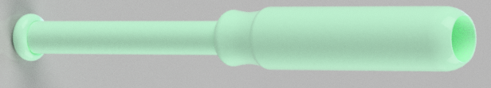
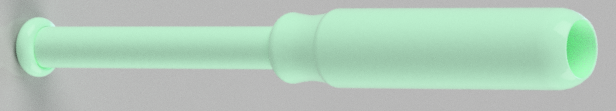
Technical Drawings:
 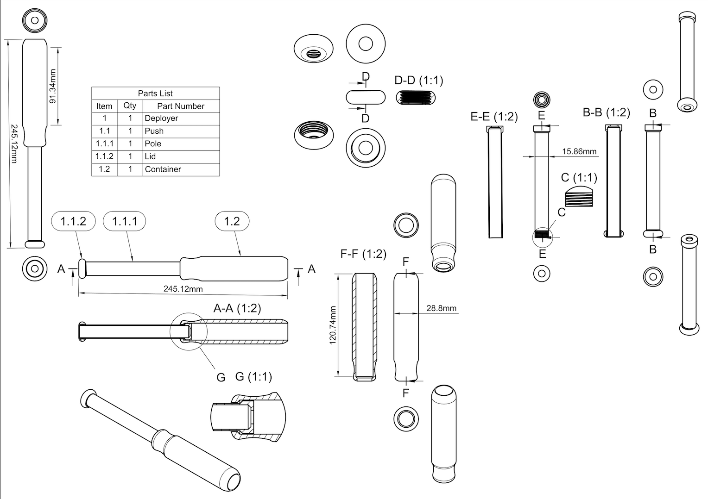
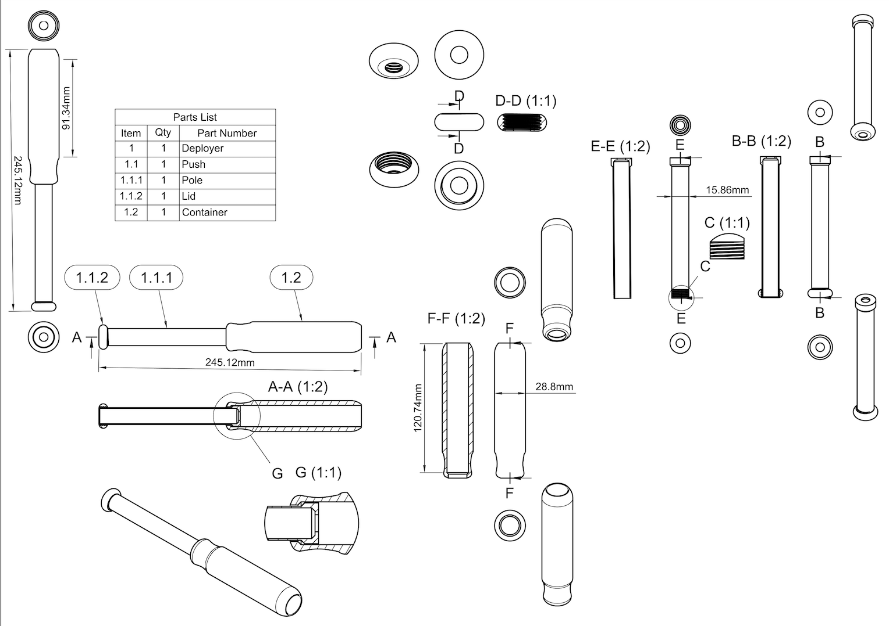


3D Printing of Prototype:

Physical Prototype:
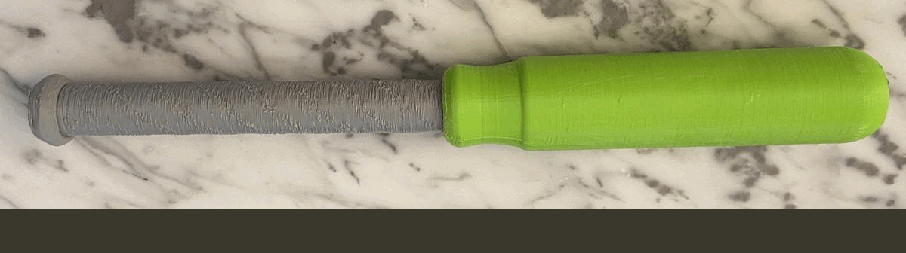
2. Calla Health Foundation - Junior Engineer, 2022
My Work:
Designed packaging for Pocket Colposcope

 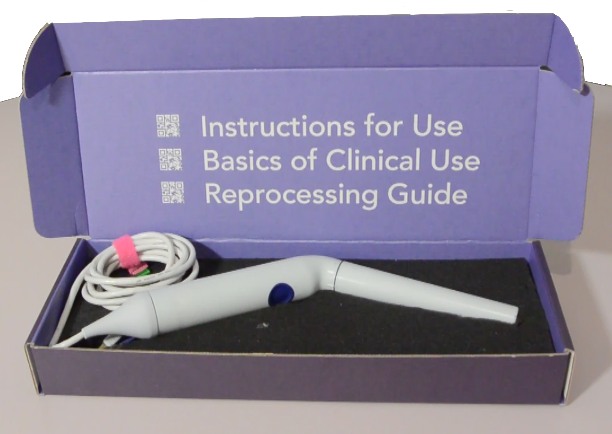
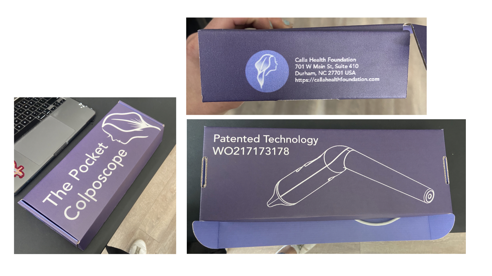
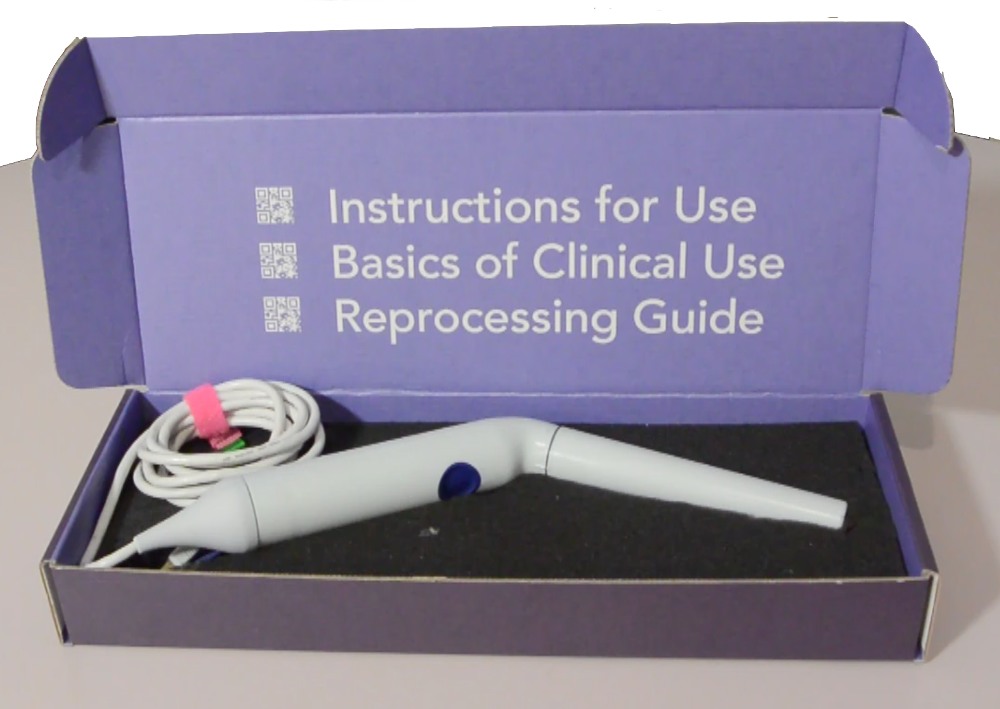
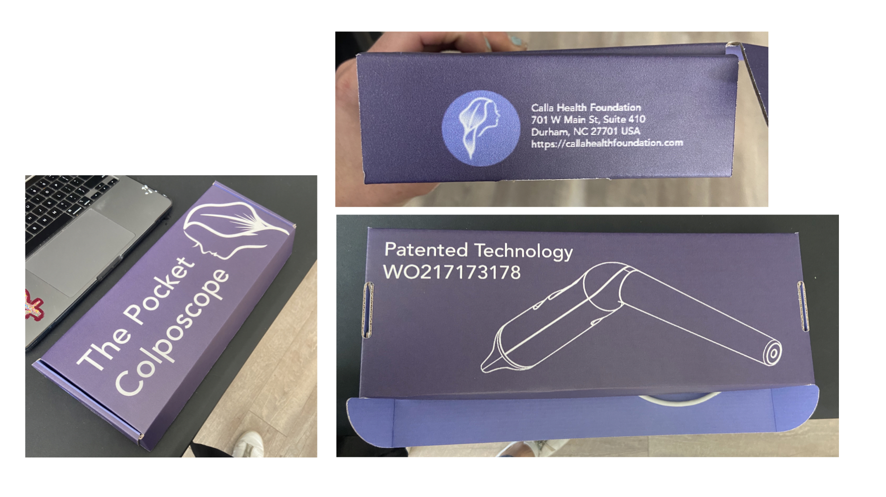
Concept proposal for optimization of reprocessing procedures
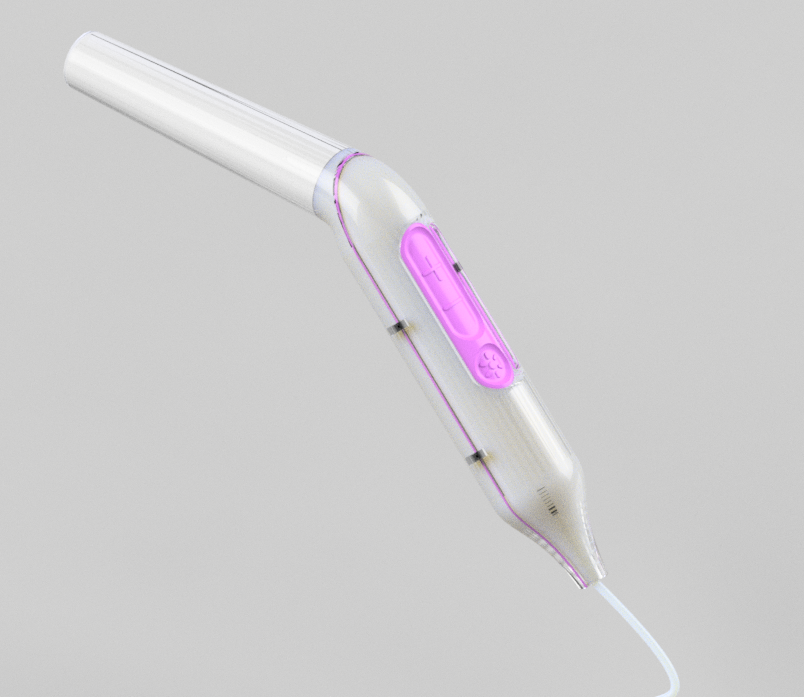


3. Center for Global Women's Health Technologies Contract Work - Duke University, 2022
My Work:
Development of validation platform, training materials, and quality testing and validation of Pocket colposcope device for research collaborations and future commercialization
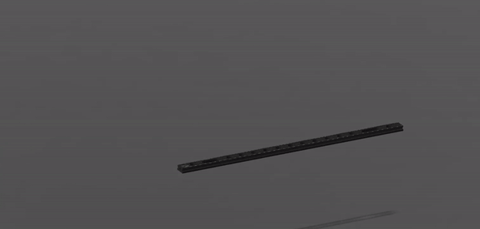
 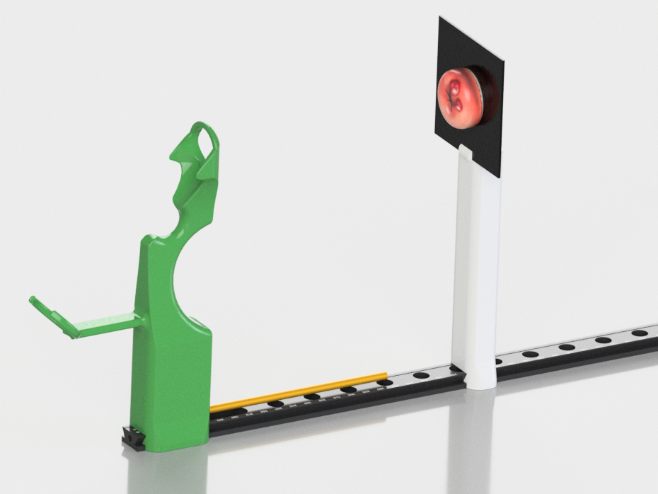
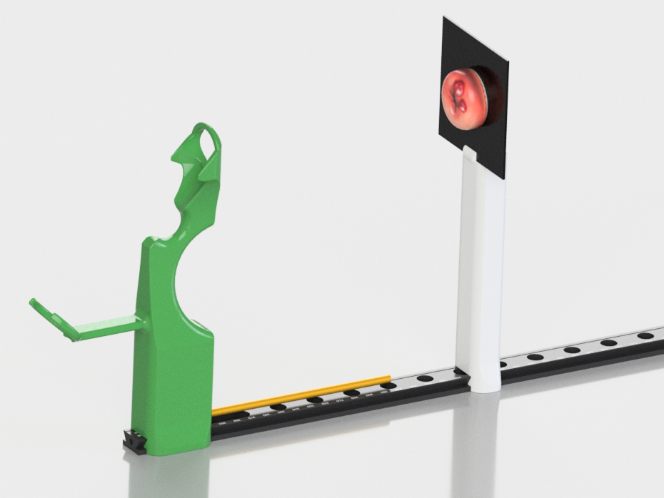
 16.19.41.png)
 16.19.14.png)
 16.19.30.png)


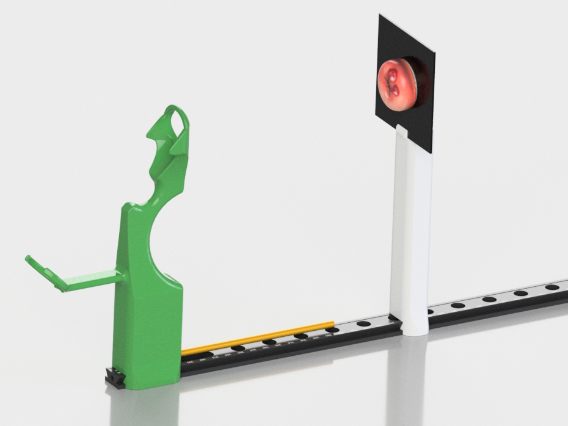
4. Calla Health Foundation - Intern, 2021
My Work:
Designed portable testing platform to verify device specifications


5. Research Assistant - Eric S. Richardson Ph.D., 2020-2021
My Work:
Design of validation tests for orthopedic surgical helmet manifold efficacy under COVID-19 pandemic, by designing, conducting, participating in trial and as an author of the paper for the Journal of Arthroplasty


6. Center for Global Women's Health Technologies - Duke University, 2021
My Work:
Optimization of HSP90 Staining Platform for Cervical Biopsy Screening
Current State of Technology:

Needs to Address:
- Integrity of biopsy specimen maintained
- Can be transported by clinician
- System can be implemented in Low-to-Middle-Income Contries
- Battery power as a power source
- Insulation of wiring between microcontroller, circuits and pumps


Addressed Needs:
- Created compact set up to fit required subcomponents for use, become portable, and optimize process workflow
- Developed mechanism to be able to flip sample 180º to mantain specimen integrity
- Implemented of mechanism to regulate height of scope for proper visualization of sample at the desired working distances for scope
- Added a horizontal mobility feature to the scope to expand the field of visualization